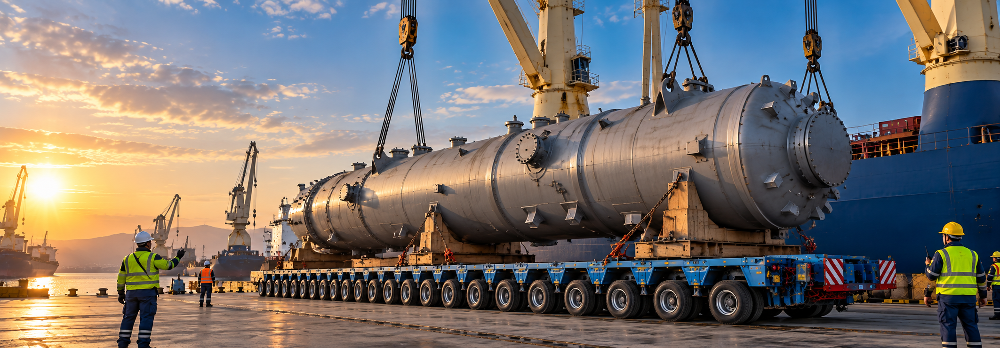
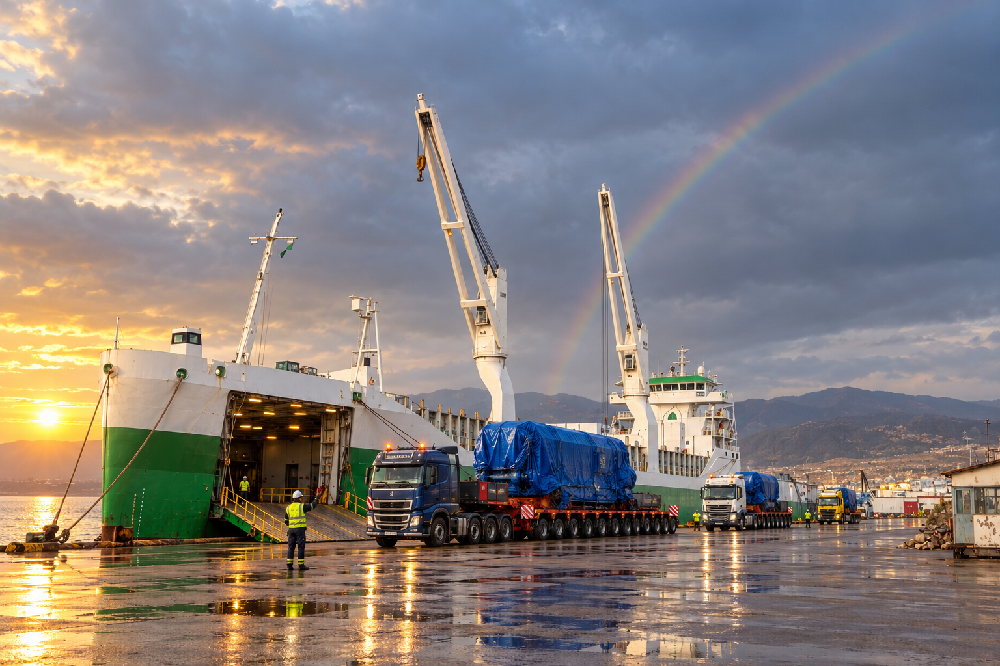

HEAVY & OVERSIZED TRANSPORT
Transportation solutions for heavy, oversized and out-of-gauge cargo using specialized trailers and project-specific equipment.

06 / SERVICE
ENGINEERED LOGISTICS FOR COMPLEX AND OVERSIZED CARGO
From route planning and heavy lifting to road, port and multimodal transportation, we provide integrated logistics solutions for oversized, heavy and technically demanding project cargo.
PROJECT LOGISTICS / 01
Project cargo requires more than moving a load from one location to another.
Every heavy and oversized shipment demands detailed planning, route studies, equipment selection, lifting coordination, permits, safety management and precise execution.
SAMA Transportations provides integrated project logistics solutions for heavy machinery, industrial equipment, power generation components, construction equipment and oversized cargo.
From the first engineering study to final delivery at site, every stage is planned around the dimensions, weight, route and operational requirements of the cargo.
CAPABILITIES / 02
One engineered plan connects every operation—from the first assessment to final site positioning.
Transportation solutions for heavy, oversized and out-of-gauge cargo using specialized trailers and project-specific equipment.
Detailed route assessment covering road conditions, bridge clearances, turning areas, height restrictions and access to the final delivery site.
Planning and coordination of cranes, gantry systems and heavy lifting operations for loading, unloading and positioning.
Coordination of project cargo at ports and terminals including receiving, staging, loading, discharge and transfer operations.
Integrated road and sea transportation solutions designed for complex international project cargo movements.
Transport to the final project site together with unloading, positioning and delivery coordination.
CARGO PROFILE / 03
Specialized transportation solutions for demanding industrial and infrastructure projects.
PROJECT METHOD / 04
Cargo dimensions, weight, lifting points and delivery requirements are evaluated.
The transportation route and operational restrictions are studied in detail.
Suitable trailers, lifting equipment and transportation methods are selected.
Cargo is safely loaded and secured according to the approved transportation plan.
Road, port and sea operations are coordinated as one integrated project.
Cargo arrives at the project site and is unloaded or positioned according to operational requirements.

ENGINEERING & SAFETY / 05
Heavy cargo transportation leaves no room for improvisation.
Our project approach focuses on careful planning, operational control and safe execution throughout every stage of transportation.
Before mobilization, cargo specifications, equipment requirements, loading methods, route restrictions and delivery conditions are evaluated to establish the most suitable transport solution.
SECTORS / 06
Project logistics expertise aligned with critical industrial, energy and infrastructure operations.
CROSS-BORDER PROJECT LOGISTICS / 07
Complex cargo often moves through several countries, ports and transport modes before reaching its final destination.
We coordinate road transportation, port operations, sea freight and final-site delivery as one integrated logistics process.
Our project teams focus on continuity between each transportation stage so that heavy cargo moves safely and efficiently from origin to destination.
ONE PROJECT.
ONE LOGISTICS PLAN.
FROM ORIGIN TO FINAL POSITION.
THE SAMA DIFFERENCE / 08
Every transportation plan is developed according to the cargo and route.
Road, port, lifting and multimodal operations are coordinated together.
Operational knowledge for challenging and oversized transportation requirements.
Coordination from the point of loading through final delivery.
Transport and lifting operations are planned with safety as a core requirement.
PROJECT OPERATIONS / 09
Selected visual references from heavy and oversized cargo operations. Select an image to view it in detail.
START THE CONVERSATION
Send us your cargo dimensions, weight, origin and destination. Our project team will evaluate the transportation requirements and develop the right logistics solution for your operation.